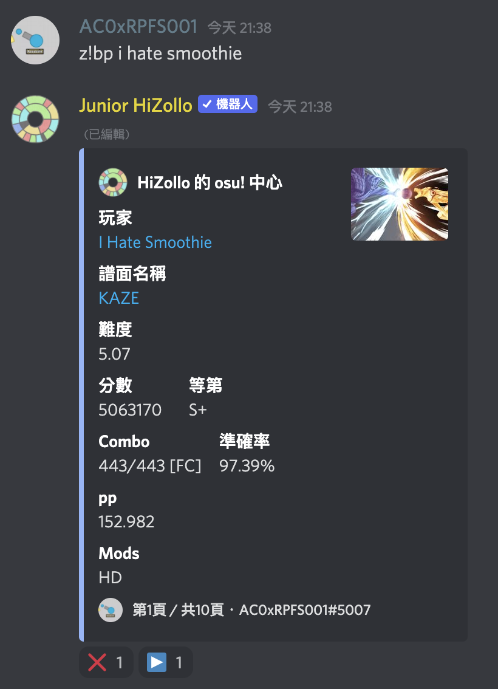
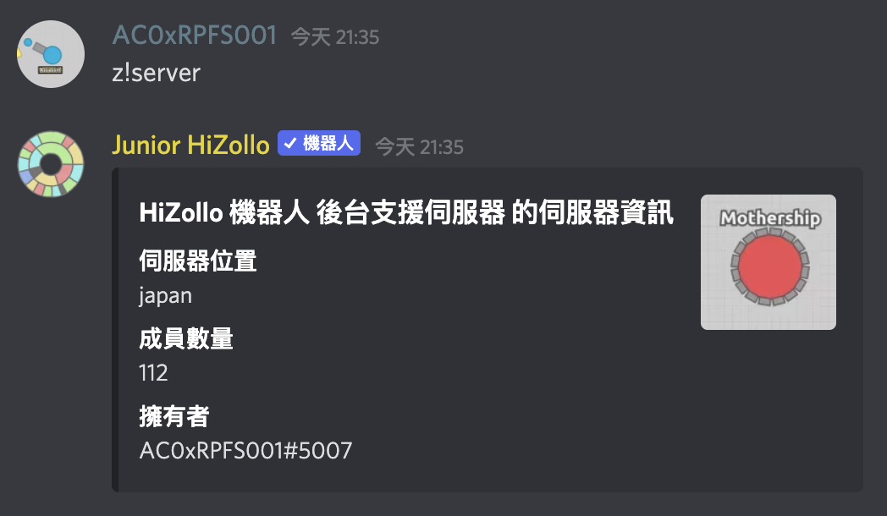

z!m join 才能使用 music 的 join 指令，但子指令快速用法允許你直接使用 z!join 來執行
z!join 後，HiZollo 到底做了什麼：首先他看到你想要執行 join 指令，便去他的指令庫尋找 join 指令，
但是他找不到，這時他會去找所有的子指令管轄者，詢問這些管轄者他們有沒有子指令叫做 join？
而 music 有，於是 HiZollo 就把指令轉交給 music 處理，也就等同於執行 z!music join。z!best 去執行 osu 的 best 指令。
z!bp 來執行這個指令。

z!server 時，他會執行主指令中的 server 指令，而非 diep 的 server 指令。

但是，diep 的 server 指令有個別名叫做 discord，所以如果你使用 z!discord 的話，因為沒有叫做 discord 的主指令，
所以他就會去執行 diep 的 server 指令。
z!help 查不到z!help play，他會告訴你那個指令不存在。這是因為 HiZollo 並沒有 play 指令，只有 music 這個子指令管轄者有。
所謂 z!play 這個 play 並不是他的正式名稱，只是一個簡短的用法，並不能取代原本的名稱，
這點跟別名是不一樣的。
| 分類 | 內容 |
|---|---|
| 基本 | 邀請 HiZollo ・ 指令清單及一般指令・ 指令用法的查詢 |
| 進階 | 子指令・ 指令別名・ 子指令快速用法 |
| 特殊 |
隱藏指令・
z!calc 的進階用法・
支援伺服器
|